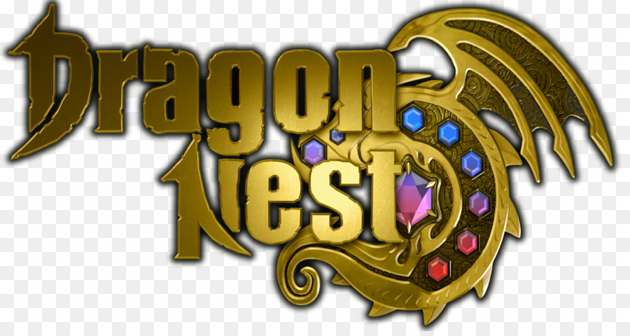

Dragon Nest
Dragon Nest adalah sebuah MMORPG fantasi bebas yang dikembangkan oleh Eyedentity. Permainan ini memakai sistem tempur non-target sehingga para pemainnya memegang kendali penuh atas setiap gerakan karakternya. Dragon Nest meminta para pemainnya memutakhirkan karakternya dengan membuat tim dan berkelana ke sejumlah penjara bawah tanah.
Warrior
•Sword Master adalah class yang gesit dan memiliki kecepatan serang yang tinggi,dan lebih fokus kepada skill magic-nya. Walaupun kekuatan serang yang lebih kecil dibanding Mercenary, jika dibandingkan,kekuatannya sama saja. Misalnya, Mercenary 1 hit mengurangi 5000 hp, sedangkan sword master dengan 3 kombo akan mengurangi 6000 hp.
-Gladiator,Lanjutan dari Class Sword Master dalam skill tree Fisik.Dengan skill Evasion Slash (Invicible Frame) yang digunakan untuk menghindari serangan dari musuh sekaligus Counter Attack dan juga skill andalan nya yaitu Finish Attack.Gladiator Memiliki Skill EX yaitu Triple Slash (Dapat menggunakan tombol kanan), Foward Thurst (Dapat menggunakan Tombol kanan) , Flash Stance (Dapat menggunakan Tombol kanan), Line Drive (Menggunakan tombol S dapat memperpendek jarak Line Drive), Dan Finish Attack (Mengkonsumsi 15 Buuble).Dan Serta Memiliki Instant Skill dan Awakening Skill.Instant Skillnya adalah jika Menggunakan Dash Kick/Dash Slash/Dash Combo Akan Mengaktifkan Line Drive Instant.Sedangkan Awakening Skill nya dimulai dari Passive Awakening : Triple Slash (Menambah 2 Hit) Forward Thrust (Damage meningkat, Recover HP 3%, Animasi serangan forward thrust berubah jika digunakan dalam posisi berhenti) Break (Cooldown lebih cepat. Membuat 10 [Phisical Rising/Buuble]) Parrying Stance (Counter slash dapat diaktifkan manual dengan menekan normal attack tanpa harus terkena serangan musuh Saat melakukan counter, Invincibility meningkat. Dan Active Awakening : Slide Dodge (Meluncur kearah yang diinginkan sambil menebas pedang. Dapat digunakan saat casting skill lain Mengkonsumsi bubble 4 [Physical],Hyper Drive (Menebas kearah yang diinginkan sebanyak 4x, Tekan normal attack untuk menambah hit Mengkonsumsi 15 bubble [Physical])